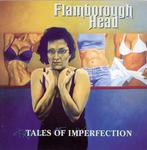

| Artist: | Flamborough Head |
| Title: | Tales Of Imperfection |
| Label: | Cyclops CYCL 152 |
| Length(s): | 51 minutes |
| Year(s) of release: | 2005 |
| Month of review: | [05/2006] |
| 1) | For Starters | 2.23 |
| 2) | Maureen | 11.59 |
| 3) | Higher Ground | 6.59 |
| 4) | Silent Stranger | 10.30 |
| 5) | Captive Of Fate | 8.07 |
| 6) | Mantova | 8.39 |
| 7) | Year After Year | 3.11 |
We run right onto Higher Ground, again an instrumental, but a lengthier one. The song has many (bombasitc) elements and a large amount of melodic and instrumental variation, with a few synthetic violins thrown in, and some wonderful thematic flute play, combined with acoustic guitar. This is similar to the best of Hackett's solo material, the faery stuff, although the guitar is more Latimer like. This does not mean the song is all melody. Indeed, following it we get to a rather funky part with 70's rhythm guitar. With the very Camel like keyboards that follow, we are thoroughly enmeshed in seventies Camel. Excellent.
Silent Stranger is the next somewhat epic vocal track, opening with flute and some prominent bass play, which gives the music a somewhat bouncy and frolic feel. The band again takes its time to start up the song, playing the main themes, before moving to the vocal part. Again, there is a lot of melodic material going into a song of this length. It seems Flamborough Head was pretty inspired when they wrote this. But the music is not all friendly, indeed the piano play is quite tense. The vocals are again rather pacey, as is the guitar work, but they do slowly build up. Boomsma shows a bit more roughness at the edges, which improves things, I think. Halfway, we arrive at an introspective interlude with piano and strong melodic guitar work. In these moments, the Hackett influence is strongest. Later the vocals come back in, but in a different fashion, a bit more emotional and outspoken this time around. Boomsma is sure singer these days.
Captive Of Fate opens with acoustic guitar and string synths. The vocal line sounds a bit familiar, but that could be from a previous listen. The song is about helping others in need, usually they have only fate to blame for their situation. The chorus is one that sticks in your head. The acoustic guitarwork is strongly reminiscent of Genesis.
Mantova is again an instrumental, the third one thus far. It brings the same melodic richness, but without sounding like something you heard before. This time the flute plays the rol of bringing in a sense or urgency and all through the organ is abrim in the back. This is one pacey instrumental with flashy play from all concerned. Year After Year is the closing vocal track, a ballad. Boomsma again shows how much she has grown since the first album, and she carries the song more or less by herself, although the guitar solo shines too.